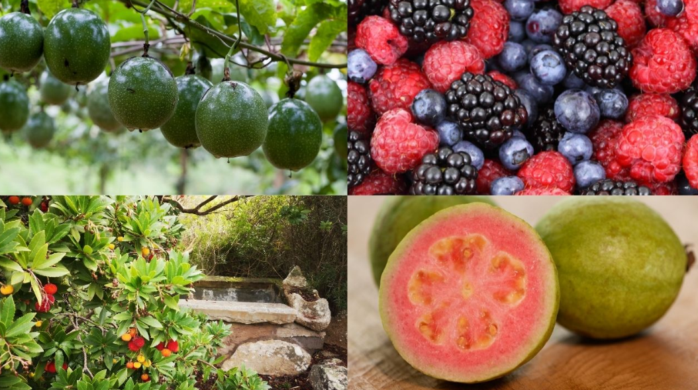
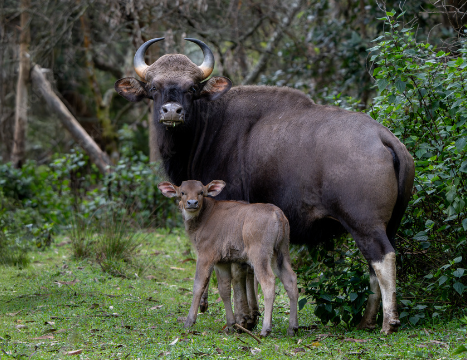
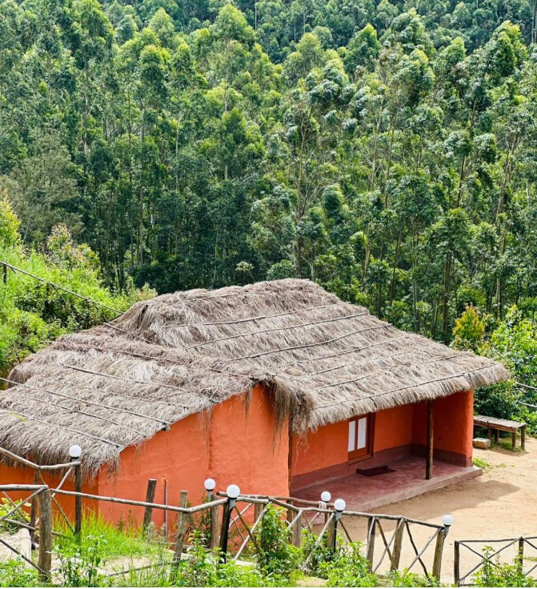
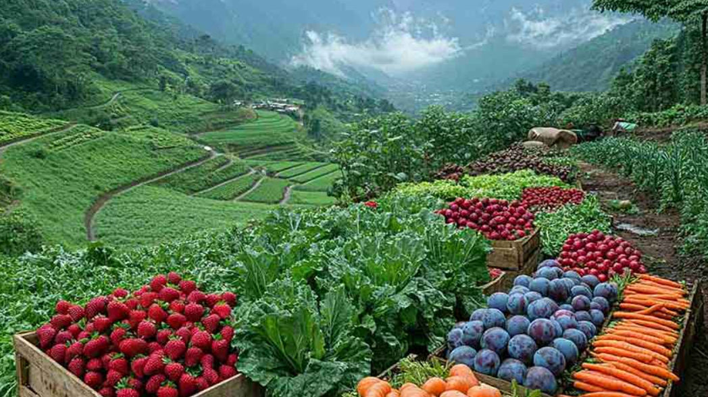
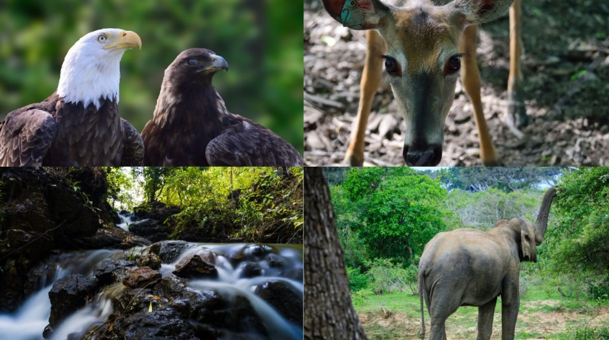

Vattavada is a peaceful hill village in the Idukki district of Kerala, known for its cool climate and natural beauty. It is famous for its large farms where a variety of vegetables and fruits like carrots, potatoes, cabbage, apples, and strawberries are grown. The green fields and fresh air make it a unique and refreshing place for visitors.
The village is also home to different animals such as cows, goats, and birds, which are part of the local farming life. The houses in Vattavada are simple and traditional, surrounded by farms and hills. The calm environment, fresh produce, and beautiful landscapes make Vattavada a special destination for tourists who love nature and village life.





Vattavada is a beautiful hill village in Idukki District, Kerala, located near Munnar. It is famous for its cool climate, vegetable farms, fruit orchards and breathtaking mountain views. The village is situated at an altitude of about 1,800 metres above sea level and is one of the highest inhabited places in Kerala.
The name "Vattavada" is believed to have originated from Malayalam words referring to the circular valleys and fertile land surrounded by hills. The village is well known for its agricultural landscape.
Vattavada has been inhabited for centuries by farming communities. Due to its fertile soil and cool climate, the village became an important centre for cultivating fruits and vegetables. Today, it is one of Kerala's leading agricultural villages and a popular tourist destination.
Vattavada is known as the vegetable and fruit bowl of Kerala. Farmers cultivate carrots, potatoes, cabbage, beans, garlic, strawberries, oranges, apples, plums and many other crops.
The region is rich in shola forests, grasslands and rare plants. The famous Neelakurinji flower also blooms in the nearby hills once every twelve years, covering the mountains with blue flowers.
Today, Vattavada is an important tourist destination in Kerala. It is famous for its cool climate, organic farming, fruit orchards, vegetable cultivation and eco-tourism. Thousands of visitors come every year to enjoy its natural beauty and fresh farm produce.